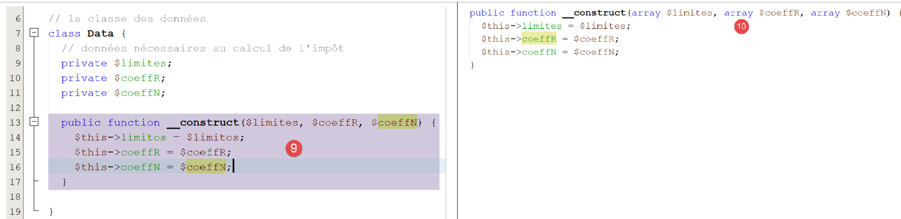

8. Ejercicio práctico – Versión 3
Volveremos al ejercicio que vimos anteriormente (secciones 4.3 y 4.4) para resolverlo utilizando código PHP que emplea una clase.
8.1. La estructura del directorio de scripts

8.2. La excepción [ExceptionImpots]
En la versión 03, cuando un constructor o un método de clase encuentra un error, lanzará la siguiente excepción [ExceptionImpots]:
Comentarios
- línea 4: la clase [ExceptionImpots] se encuentra en el espacio de nombres [Application];
- línea 6: la clase [ExceptionImpots] hereda de la clase PHP predefinida [RuntimeException];
- línea 8: el constructor espera dos parámetros:
- $message: es el mensaje de error asociado a la excepción;
- $code: es el código de error asociado a la excepción. Si no está presente, se utilizará el código 0;
8.3. La clase [TaxAdminData]
En la versión 02, los datos de administración tributaria se recopilaron:
- primero en un archivo JSON;
- luego, desde este archivo JSON a una matriz asociativa;
En la versión 03, los datos de administración tributaria siguen estando en el archivo [taxadmindata.json], pero con nombres de atributos diferentes:
{
"limites": [
9964,
27519,
73779,
156244,
0
],
"coeffR": [
0,
0.14,
0.3,
0.41,
0.45
],
"coeffN": [
0,
1394.96,
5798,
13913.69,
20163.45
],
"plafondQfDemiPart": 1551,
"plafondRevenusCelibatairePourReduction": 21037,
"plafondRevenusCouplePourReduction": 42074,
"valeurReducDemiPart": 3797,
"plafondDecoteCelibataire": 1196,
"plafondDecoteCouple": 1970,
"plafondImpotCouplePourDecote": 2627,
"plafondImpotCelibatairePourDecote": 1595,
"abattementDixPourcentMax": 12502,
"abattementDixPourcentMin": 437
}
En la versión 02, este archivo se utilizaba para inicializar una matriz asociativa. En la versión 03, el archivo inicializará la siguiente clase [TaxAdminData]:
<?php
namespace Application;
class TaxAdminData {
// tax brackets
private $limites;
private $coeffR;
private $coeffN;
// tax calculation constants
private $plafondQfDemiPart;
private $plafondRevenusCelibatairePourReduction;
private $plafondRevenusCouplePourReduction;
private $valeurReducDemiPart;
private $plafondDecoteCelibataire;
private $plafondDecoteCouple;
private $plafondImpotCouplePourDecote;
private $plafondImpotCelibatairePourDecote;
private $abattementDixPourcentMax;
private $abattementDixPourcentMin;
// initialization
public function setFromJsonFile(string $taxAdminDataFilename): TaxAdminData {
// retrieve the contents of the tax data file
$fileContents = \file_get_contents($taxAdminDataFilename);
$erreur = FALSE;
// mistake?
if (!$fileContents) {
// we note the error
$erreur = TRUE;
$message = "Le fichier des données [$taxAdminDataFilename] n'existe pas";
}
if (!$erreur) {
// retrieve the jSON code from the configuration file in an associative array
$arrayTaxAdminData = \json_decode($fileContents, true);
// mistake?
if ($arrayTaxAdminData === FALSE) {
// we note the error
$erreur = TRUE;
$message = "Le fichier de données jSON [$taxAdminDataFilename] n'a pu être exploité correctement";
}
}
// mistake?
if ($erreur) {
// throw an exception
throw new ExceptionImpots($message);
}
// initialization of class attributes
foreach ($arrayTaxAdminData as $key => $value) {
$this->$key = $value;
}
// check that all keys have been initialized
$arrayOfAttributes = \get_object_vars($this);
foreach ($arrayOfAttributes as $key => $value) {
if (!isset($this->$key)) {
throw new ExceptionImpots("L'attribut [$key] de [TaxAdminData] n'a pas été initialisé");
}
}
// we check that we only have real values
foreach ($this as $key => $value) {
// $value must be a real number >=0 or an array of reals >=0
$result = $this->check($value);
// mistake?
if ($result->erreur) {
// throw an exception
throw new ExceptionImpots("La valeur de l'attribut [$key] est invalide");
} else {
// we note the value
$this->$key = $result->value;
}
}
// we return the object
return $this;
}
private function check($value): \stdClass {
…
return $result;
}
// toString
public function __toString() {
// object's Json string
return \json_encode(\get_object_vars($this), JSON_UNESCAPED_UNICODE);
}
// getters and setters
public function getLimites() {
return $this->limites;
}
public function getCoeffR() {
return $this->coeffR;
}
…
}
public function setLimites($limites) {
$this->limites = $limites;
return $this;
}
public function setCoeffR($coeffR) {
$this->coeffR = $coeffR;
return $this;
}
…
}
Comentarios
- líneas 6–20: las propiedades que contendrán las propiedades del mismo nombre del archivo JSON [taxadmindata.json]. Este es un punto importante: las propiedades de la clase [TaxAdminData] son idénticas a las del archivo JSON [taxadmindata.json]. Esta característica facilita mucho la escritura del código;
- La clase [TaxAdminData] no tiene constructor. En PHP, no es posible tener varios constructores. Por lo tanto, definir uno impide que el objeto se inicialice de cualquier otra forma. De ahora en adelante, nuestras clases no tendrán un constructor, sino que contarán con varios métodos del tipo [setFromSomething] que permitirán inicializarlas de diferentes maneras. A continuación, se construye un objeto de tipo [TaxAdminData] utilizando la expresión:
- línea 23: el método [setFromJsonFile] inicializa los atributos de la clase con los del mismo nombre en el archivo [$jsonFilename];
- líneas 24–42: el archivo JSON se analiza para construir la matriz asociativa [$arrayTaxAdminData]. Ya hemos visto este código en el script [main.php] de la versión 02;
- líneas 44–47: si se produce un error al procesar el archivo JSON, se lanza una excepción. Esta excepción se propagará hasta el script principal [main.php];
- líneas 48–51: Se inicializan los atributos de la clase. Aquí aprovechamos el hecho de que la matriz asociativa [$arrayTaxAdminData] y la clase [TaxAdminData] tienen atributos con los mismos nombres que los valores del archivo JSON;
- líneas 53–57: Comprobamos que todos los atributos de la clase [TaxAdminData] se han inicializado;
- línea 53: la expresión [get_object_vars($this)] devuelve un array asociativo cuyos atributos son los del objeto [$this], es decir, los atributos de la clase [TaxAdminData]. Aquí es importante comprender que el proceso de inicialización de las líneas 48–51 puede haber añadido atributos al objeto [$this]. Por lo tanto, si escribimos:
entonces el atributo [x] se añade al objeto [$this] aunque este atributo no se haya declarado en la clase [TaxAdminData]. Lo que es seguro es que los atributos de las líneas 6–20 forman parte del objeto [$this], pero es posible que no se hayan inicializado. Es un error fácil de cometer; basta con un error tipográfico en el nombre de un atributo en el archivo [taxadmindata.json];
- líneas 54–57: iteramos por todos los atributos de [$this] y, si alguno de ellos no se ha inicializado, lanzamos una excepción;
- un atributo puede inicializarse con un valor incorrecto. En PHP, no es posible especificar un tipo para los atributos. Por lo tanto, la operación:
es posible aunque el atributo [$plafondQfDemiPart] debería ser un número real;
- líneas 59–71: verificamos que cada uno de los atributos de la clase tenga un valor real positivo o cero. La función [check] de la línea 76 realiza esta tarea. Su parámetro [$value] es un valor único o una matriz de valores;
- línea 62: la función [check] devuelve un objeto de tipo [\stdClass] con dos atributos:
- [error]: TRUE si se ha producido un error, FALSE en caso contrario;
- [value]: el valor numérico real correspondiente al parámetro [$value] pasado en la línea 62;
- línea 64: comprobamos si la verificación se ha realizado correctamente o no;
- línea 66: si un atributo no es un número real positivo o cero, se lanza una excepción;
- línea 69: en caso contrario, registramos su valor numérico;
- línea 73: devolvemos el objeto [$this] como resultado;
La función [check] es la siguiente:
private function check($value): \stdClass {
// $value est soit un tableau d'éléments soit un unique élément
// on crée un tableau
if (!\is_array($value)) {
$tableau = [$value];
} else {
$tableau = $value;
}
// on transforme le tableau d'éléments de type non connu en tableau de réels
$newTableau = [];
$result = new \stdClass();
// les éléments du tableau doivent être des nombres décimaux positifs ou nuls
$modèle = '/^\s*([+]?)\s*(\d+\.\d*|\.\d+|\d+)\s*$/';
for ($i = 0; $i < count($tableau); $i ++) {
if (preg_match($modèle, $tableau[$i])) {
// on met le float dans newTableau
$newTableau[] = (float) $tableau[$i];
} else {
// on note l'erreur
$result->erreur = TRUE;
// on quitte
return $result;
}
}
// on rend le résultat
$result->erreur = FALSE;
if (!\is_array($value)) {
// une seule valeur
$result->value = $newTableau[0];
} else {
// une liste de valeurs
$result->value = $newTableau;
}
return $result;
}
Comentarios
- Línea 1: El parámetro [$value] es una matriz o un único elemento. Además, se desconoce su tipo. El valor procede del archivo [taxadmindata.json]. Dependiendo de los valores introducidos en este archivo, los valores leídos pueden ser números enteros, números reales, cadenas de caracteres o valores booleanos. Por ejemplo:
"plafondQfDemiPart": 1551,
"plafondQfDemiPart": 1551.78,
"plafondQfDemiPart": "1551",
"plafondQfDemiPart": "xx",
En el caso 1, el valor es de tipo [entero], en el caso 2 de tipo [numérico de coma flotante], en el caso 3 de tipo [cadena] que se puede convertir en un número, y en el caso 4 de tipo [cadena] que no se puede convertir en un número;
- líneas 4–8: creamos una matriz a partir del parámetro [$value] recibido en la línea 1;
- línea 10: la matriz que rellenaremos con números reales;
- línea 11: el resultado será un objeto de tipo [\stdClass];
- línea 13: expresión relacional para un número real positivo o cero;
- líneas 14–24: verificamos que todos los elementos de la matriz [$tableau] sean números reales positivos o cero y rellenamos la matriz [$newTableau] con estos elementos convertidos al tipo [float] (línea 17);
- líneas 18–23: tan pronto como se detecta un elemento que no es un número real positivo o cero, se anota el error en el resultado y se devuelve el resultado;
- líneas 25–34: caso en el que todos los elementos de la matriz [$tableau] han sido declarados válidos;
- Línea 32: El valor devuelto [$result→value] es una matriz de números flotantes o un único número flotante;
La función [__toString] de las líneas 82–85 devuelve la cadena JSON de los atributos y valores del objeto [$this].
Líneas 87–110: los métodos getter y setter de la clase;
Nota: A veces puede resultar un poco tedioso tener que escribir todos los métodos get/set de una clase, especialmente cuando hay muchas propiedades. NetBeans puede generarlos automáticamente, al igual que el constructor. Para ello, basta con seleccionar las propiedades [1]:

- en [2], haga clic con el botón derecho del ratón donde desee insertar el código y, a continuación, seleccione la opción [Insertar código];

- en [4], indica que deseas generar el constructor;
- en [5], marque todos los atributos: esto significa que desea que el constructor tenga un parámetro para cada atributo;
- en [6], selecciona el estilo de constructor Java;
- en [7], especifica que deseas explícitamente la palabra clave [public] antes del constructor;
- En [8], haz clic en Aceptar;

- En [9], NetBeans ha generado el constructor. Sin embargo, no ha podido especificar los tipos de los parámetros porque no los conoce. Añádalos usted mismo [10];
Para generar los métodos getter y setter, repita los pasos 2 a 4 y, en el paso 4, seleccione [Getter y Setter]:

- En [5], especifica que deseas métodos getter y setter para cada uno de los atributos;
- En [6], especifica que quieres los getter y setter en el estilo utilizado por Java: setAttribute, getAttribute;
- En [7], especifique que estos métodos getter y setter deben ser públicos;
- en [8], haz clic en Aceptar;

- En [9], los métodos getter y setter generados por NetBeans;
Elimine estos métodos getter y setter y repita los pasos 2 a 7.
- En [8], marque la opción [Fluent Setter] que no habíamos marcado anteriormente;
El resultado es el siguiente:

Cada setter termina con una operación [return $this]. Esto permite que los atributos se inicialicen de la siguiente manera:
De hecho, el valor de [$data→setLimites($limites)] (línea 32 del código) es [$this], es decir, aquí [$data]. Por lo tanto, podemos llamar al método [setCoeffR($coeffR)] de este objeto y así sucesivamente, ya que, a su vez, este método también devuelve [$this] (línea 37 del código). Este estilo de escribir métodos de clase, en el que los métodos que no deberían devolver nada devuelven en su lugar el objeto [$this], se denomina escritura fluida. Hace que estos métodos sean más fáciles de usar.
8.4. La interfaz [InterfaceImpots]
Ahora definimos la siguiente interfaz [InterfaceImpots] [InterfaceImpots.php]:
<?php
// namespace
namespace Application;
interface InterfaceImpots {
// retrieve tax bracket data for tax calculations
// can throw the ExceptionImpots exception
public function getTaxAdminData(): TaxAdminData;
// the interface knows how to calculate a tax
public function calculerImpot(string $marié, int $enfants, int $salaire): array;
// the interface can process data in text files
// $usersFilename: user data file in the form of marital status, number of children, annual salary
// $resultsFilename: results file with marital status, number of children, annual salary, tax amount
// $errorsFilename: file of errors encountered
// can throw the ExceptionImpots exception
public function executeBatchImpots(string $usersFileName, string $resultsFileName, string $errorsFileName): void;
}
Comentarios
- línea 4: la interfaz se coloca en el espacio de nombres [Application];
- línea 6: la interfaz para calcular los impuestos;
- línea 10: el método [getTaxAdminData] recuperará datos de la administración tributaria en un objeto de tipo [TaxAdminData], que acabamos de introducir. Dado que estos datos pueden estar en un archivo, una base de datos o incluso en la red, el método [getTaxAdminData] podría no conseguir recuperar los datos. En este caso, lanzará una excepción [ExceptionImpots]. Este es el método estándar en la programación orientada a objetos para señalar un error encontrado en un método o constructor;
- línea 13: el método [calculateTax] calculará el impuesto de un usuario;
- línea 20: el método [executeBatchImpots] calculará el impuesto para varios contribuyentes:
- [$usersFileName] es el nombre del archivo de texto que contiene los datos de los contribuyentes;
- [$resultsFileName] es el nombre del archivo de texto que contiene los importes de los impuestos de estos contribuyentes;
- [$errorsFileName] es el nombre del archivo de texto que contiene los errores encontrados durante el procesamiento de estos archivos;
El contenido del archivo de texto [$usersFileName] podría tener este aspecto:
oui,2,55555
oui,2,50000
oui,3,50000
non,2,100000
non,3x,100000
oui,3,100000
oui,5,100000x
non,0,100000
oui,2,30000
non,0,200000
oui,3,200000
Tenga en cuenta que las líneas 5 y 7 contienen entradas incorrectas.
El contenido del archivo de texto [$resultsFileName] será entonces el siguiente:
y el que aparece en el archivo de texto [$errorsFileName] es el siguiente:
8.5. La clase [Utilities]
También definimos una clase [Utilities] en un archivo llamado [Utilities.php]:
<?php
// namespace
namespace Application;
// a class of utility functions
abstract class Utilitaires {
public static function cutNewLinechar(string $ligne): string {
// delete the end-of-line mark from $ligne if it exists
$longueur = strlen($ligne); // line length
while (substr($ligne, $longueur - 1, 1) == "\n" or substr($ligne, $longueur - 1, 1) == "\r") {
$ligne = substr($ligne, 0, $longueur - 1);
$longueur--;
}
// end - return the line
return($ligne);
}
}
Comentarios
- línea 4: la clase [Utilities] también se coloca en el espacio de nombres [Examples];
- línea 9: el método [cutNewLineChar] elimina cualquier carácter de fin de línea del texto que se le pasa como parámetro. Devuelve la nueva línea así formada. Tenga en cuenta que se trata de un método estático, lo que significa que se llamará de la forma [Utilities::cutNewLineChar];
8.6. La clase abstracta [AbstractBaseImpots]
La interfaz [InterfaceImpots] será implementada por la siguiente clase abstracta [AbstractBaseImpots] [AbstractBaseImpots.php]:
<?php
// namespace
namespace Application;
// definition of an abstract class AbstractBaseImpots
abstract class AbstractBaseImpots implements InterfaceImpots {
// tax administration data
private $taxAdminData = NULL;
// data required for tax calculation
abstract function getTaxAdminData(): TaxAdminData;
// tAX CALCULATION
// --------------------------------------------------------------------------
public function calculerImpot(string $marié, int $enfants, int $salaire): array {
// $marié : yes, no
// $enfants : number of children
// $salaire: annual salary
// $this->taxAdminData: tax administration data
//
// we check that we have the correct data from the tax authorities
if ($this->taxAdminData === NULL) {
$this->taxAdminData = $this->getTaxAdminData();
}
// tax calculation with children
$result1 = $this->calculerImpot2($marié, $enfants, $salaire);
$impot1 = $result1["impôt"];
// tax calculation without children
if ($enfants != 0) {
$result2 = $this->calculerImpot2($marié, 0, $salaire);
$impot2 = $result2["impôt"];
// application of the family allowance ceiling
$plafonDemiPart = $this->taxAdminData->getPlafondQfDemiPart();
if ($enfants < 3) {
// $PLAFOND_QF_DEMI_PART euros for the first 2 children
$impot2 = $impot2 - $enfants * $plafonDemiPart;
} else {
// $PLAFOND_QF_DEMI_PART euros for the first 2 children, double for subsequent children
$impot2 = $impot2 - 2 * $plafonDemiPart - ($enfants - 2) * 2 * $plafonDemiPart;
}
} else {
$impot2 = $impot1;
$result2 = $result1;
}
// we take the highest tax
if ($impot1 > $impot2) {
$impot = $impot1;
$taux = $result1["taux"];
$surcôte = $result1["surcôte"];
} else {
$surcôte = $impot2 - $impot1 + $result2["surcôte"];
$impot = $impot2;
$taux = $result2["taux"];
}
// calculation of any discount
$décôte = $this->getDecôte($marié, $salaire, $impot);
$impot -= $décôte;
// calculation of any tax reduction
$réduction = $this->getRéduction($marié, $salaire, $enfants, $impot);
$impot -= $réduction;
// result
return ["impôt" => floor($impot), "surcôte" => $surcôte, "décôte" => $décôte, "réduction" => $réduction, "taux" => $taux];
}
// --------------------------------------------------------------------------
private function calculerImpot2(string $marié, int $enfants, float $salaire): array {
…
// result
return ["impôt" => $impôt, "surcôte" => $surcôte, "taux" => $coeffR[$i]];
}
// revenuImposable=annualwage-discount
// the allowance has a minimum and a maximum
private function getRevenuImposable(float $salaire): float {
…
// result
return floor($revenuImposable);
}
// calculates any discount
private function getDecôte(string $marié, float $salaire, float $impots): float {
…
// result
return ceil($décôte);
}
// calculates any reduction
private function getRéduction(string $marié, float $salaire, int $enfants, float $impots): float {
…
// result
return ceil($réduction);
}
public function executeBatchImpots(string $usersFileName, string $resultsFileName, string $errorsFileName): void {
…
}
}
Comentarios
- línea 4: la clase [AbstractBaseImpots] estará en el espacio de nombres [Application], al igual que los demás elementos de la aplicación que se está escribiendo actualmente;
- línea 7: la clase [AbstractBaseImpots] implementa la interfaz [InterfaceImpots];
- línea 9: los datos de la administración tributaria se colocarán en el atributo [$taxAdminData];
- línea 12: implementación del método [getTaxAdminData] de la interfaz. Aún no sabemos cómo definir este método: en la sección anterior vimos un ejemplo en el que los datos de la administración tributaria se tomaban de un archivo JSON. Veremos otro caso en el que los datos se recuperarán de una base de datos. Corresponderá a las clases derivadas definir el contenido del método [getTaxAdminData]. Los dos casos anteriores darán lugar a dos clases derivadas. Por lo tanto, el método [getTaxAdminData] se declara abstracto, lo que automáticamente convierte a la propia clase en abstracta (línea 7);
- líneas 15–64: la función de cálculo de impuestos que ya hemos visto en las secciones enlace y enlace;
- La versión 02 almacenaba los datos de administración tributaria en una matriz asociativa [$taxAdminData]. La versión 03 los almacena en el atributo [$this→taxAdminData]. La primera diferencia entre estos dos enfoques es la visibilidad de los datos fiscales:
- En la versión 02, la matriz asociativa [$taxAdminData] no tenía visibilidad global. Por lo tanto, se pasaba como parámetro a todas las funciones de cálculo de impuestos;
- en la versión 03, el atributo [$this→taxAdminData] tiene visibilidad global para todos los métodos de la clase. Por lo tanto, no se pasa como parámetro a todas las funciones de cálculo de impuestos;
- Una segunda diferencia se deriva del hecho de que la versión 03 sustituye las funciones por métodos de clase. Ahora, cada llamada a un método se realiza utilizando la expresión [$this→getMethod(…)] (líneas 27, 31, 57, 60);
- una tercera diferencia es que, cuando el método [calculateTax] comienza su trabajo, no sabe si el atributo [private $taxAdminData] que necesita ha sido inicializado. Esto se debe a que el constructor de la clase no lo inicializa. Por lo tanto, corresponde al método [calculateTax] hacerlo utilizando el método [getTaxAdminData] de la línea 12. Esto es lo que se hace en las líneas 23-25;
- aparte de estas diferencias, los métodos de cálculo de impuestos siguen siendo los mismos que en versiones anteriores;
La función [executeBatchImpots] es la siguiente:
public function executeBatchImpots(string $usersFileName, string $resultsFileName, string $errorsFileName): void {
// pas mal d'erreurs peuvent se produire dès qu'on gère des fichiers
try {
// ouverture fichier des erreurs
$errors = fopen($errorsFileName, "w");
if (!$errors) {
throw new ExceptionImpots("Impossible de créer le fichier des erreurs [$errorsFileName]", 10);
}
// ouverture fichier des résultats
$results = fopen($resultsFileName, "w");
if (!$results) {
throw new ExceptionImpots("Impossible de créer le fichier des résultats [$resultsFileName]", 11);
}
// lecture des données utilisateur
// chaque ligne a la forme statut marital, nombre d'enfants, salaire annuel
$data = fopen($usersFileName, "r");
if (!$data) {
throw new ExceptionImpots("Impossible d'ouvrir en lecture les déclarations des contribuables [$usersFileName]", 12);
}
// on exploite la ligne courante du fichier des données utilisateur
// qui a la forme statut marital, nombre d'enfants, salaire annuel
$num = 1; // n° ligne courante
$nbErreurs = 0; // nbre d'erreurs rencontrées
while ($ligne = fgets($data, 100)) {
// debug
// print "ligne n° " . ($i + 1) . " : " . $ligne;
// on enlève l'éventuelle marque de fin de ligne
$ligne = Utilitaires::cutNewLineChar($ligne);
// on récupère les 3 champs marié:enfants:salaire qui forment $ligne
list($marié, $enfants, $salaire) = explode(",", $ligne);
// on les vérifie
// le statut marital doit être oui ou non
$marié = trim(strtolower($marié));
$erreur = ($marié !== "oui" and $marié !== "non");
if (!$erreur) {
// le nombre d'enfants doit être un entier
$enfants = trim($enfants);
if (!preg_match("/^\s*\d+\s*$/", $enfants)) {
$erreur = TRUE;
} else {
$enfants = (int) $enfants;
}
}
if (!$erreur) {
// le salaire est un entier sans les centimes d'euros
$salaire = trim($salaire);
if (!preg_match("/^\s*\d+\s*$/", $salaire)) {
$erreur = TRUE;
} else {
$salaire = (int) $salaire;
}
}
// erreur ?
if ($erreur) {
fputs($errors, "la ligne [$num] du fichier [$usersFileName] est erronée\n");
$nbErreurs++;
} else {
// on calcule l'impôt
$result = $this->calculerImpot($marié, (int) $enfants, (int) $salaire);
// on inscrit le résultat dans le fichier des résultats
$result = ["marié" => $marié, "enfants" => $enfants, "salaire" => $salaire] + $result;
fputs($results, \json_encode($result, JSON_UNESCAPED_UNICODE) . "\n");
}
// ligne suivante
$num++;
}
// des erreurs ?
if ($nbErreurs > 0) {
throw new ExceptionImpots("Il y a eu des erreurs", 15);
}
} catch (ExceptionImpots $ex) {
// on relance l'exception
throw $ex;
} finally {
// on ferme tous les fichiers
fclose($data);
fclose($results);
fclose($errors);
}
}
Comentarios del código
- línea 1: la función toma tres parámetros:
- [$usersFileName]: el nombre del archivo de texto que contiene los datos de los contribuyentes. Cada línea de texto contiene los datos de un contribuyente en el siguiente formato: estado civil (sí/no), número de hijos, salario anual:
- (continuación)
- [$resultsFileName]: el nombre del archivo de texto que contendrá los resultados. Cada línea de texto tendrá el siguiente formato:
- (continuación)
- [$errorsFileName]: el nombre del archivo de texto que contiene los errores:
la ligne [5] du fichier [taxpayersdata.txt] est erronée
la ligne [7] du fichier [taxpayersdata.txt] est erronée
- línea 3: dado que varias operaciones pueden lanzar una excepción, un bloque try / catch / finally envuelve todo el código del método;
- líneas 3–19: se abren los tres archivos. Se lanza una excepción tan pronto como falla una operación de apertura;
- línea 24: las líneas del archivo [$data] se leen una a una en bloques de hasta 100 caracteres (todas las líneas tienen menos de 100 caracteres);
- línea 28: se utiliza el método estático [Utilities::cutNewLineChar] para eliminar cualquier carácter de fin de línea;
- línea 30: se recuperan los tres elementos de la línea leída;
- líneas 33–52: se comprueba la validez de los tres elementos. Aquí no se lanza una excepción si se produce un error, sino que el mensaje de error se escribe en el archivo de texto [$errors] (línea 55);
- línea 59: si la línea leída es válida, se calcula el impuesto. El resultado se obtiene como una matriz asociativa ["tax" => floor($tax), "surcharge" => $surcharge, "discount" => $discount, "reduction" => $reduction, "rate" => $rate];
- línea 61: se añaden las claves [married, children, salary] al resultado;
- línea 61: el resultado se escribe en el archivo de texto [$results] en forma de cadena JSON del resultado obtenido;
- líneas 68–70: al final del procesamiento del archivo [$data], comprobamos el número de líneas erróneas encontradas. Si hay al menos una, lanzamos una excepción;
- líneas 71–74: Capturamos la excepción que el código pueda haber lanzado y la relanzamos inmediatamente (línea 73). El propósito de esta técnica es incluir un bloque [finally] en las líneas 74–79: independientemente de cómo termine la ejecución del código del método, se cierran los tres archivos que este código pueda haber abierto. Cerrar un archivo que no se ha abierto no provoca un error;
8.7. La clase [ImpotsWithTaxAdminDataInJsonFile]
La clase abstracta [AbstractBaseImpots] no implementa el método [getTaxAdminData] de la interfaz [InterfaceImpots]. Por lo tanto, debemos definirlo en una clase derivada. Lo hacemos en la siguiente clase derivada [ImpotsWithTaxAdminDataInJsonFile]:
<?php
// namespace
namespace Application;
// definition of a ImpotsWithDataInArrays class
class ImpotsWithTaxAdminDataInJsonFile extends AbstractBaseImpots {
// a Data attribute
private $taxAdminData;
// the manufacturer
public function __construct(string $jsonFileName) {
// initialize $this->taxAdminData from file jSON
$this->taxAdminData = (new TaxAdminData())->setFromJsonFile($jsonFileName);
}
// returns data for tax calculation
public function getTaxAdminData(): TaxAdminData {
// we make the attribute [$this->taxAdminData]
return $this->taxAdminData;
}
}
Comentarios
- línea 7: la clase [ImpotsWithTaxAdminDataInJsonFile] extiende la clase abstracta [AbstractBaseImpots]. Deberá definir el método [getTaxAdminData] que su clase padre no ha definido;
- línea 9: el atributo [$taxAdminData] contendrá los datos de la administración tributaria;
- líneas 12-15: el constructor recibe como único parámetro el nombre del archivo JSON que contiene los datos fiscales;
- línea 14: se crea un objeto de tipo [TaxAdminData] y, a continuación, se inicializa. Esta operación puede lanzar una excepción de tipo [ExceptionImpots]. Esta excepción se propagará hasta el script principal [main.php];
- líneas 18–20: proporcionamos un cuerpo para el método [getTaxAdminData], que la clase padre no había definido. Aquí, simplemente devolvemos el atributo [$this->taxAdminData] inicializado por el constructor;
8.8. El script [main.php]
Estas clases e interfaces son utilizadas por el siguiente script [main.php]:
<?php
// strict adherence to declared types of function parameters
declare(strict_types = 1);
// namespace
namespace Application;
// interface and class inclusion
require_once __DIR__ . '/InterfaceImpots.php';
require_once __DIR__ . "/TaxAdminData.php";
require_once __DIR__ . '/ExceptionImpots.php';
require_once __DIR__ . '/Utilitaires.php';
require_once __DIR__ . '/AbstractBaseImpots.php';
require_once __DIR__ . "/ImpotsWithTaxAdminDataInJsonFile.php";
// test -----------------------------------------------------
// definition of constants
const TAXPAYERSDATA_FILENAME = "taxpayersdata.txt";
const RESULTS_FILENAME = "resultats.txt";
const ERRORS_FILENAME = "errors.txt";
const TAXADMINDATA_FILENAME = "taxadmindata.json";
try {
// create a ImpotsWithTaxAdminDataInJsonFile object
$impots = new ImpotsWithTaxAdminDataInJsonFile(TAXADMINDATA_FILENAME);
// we execute the tax batch
$impots->executeBatchImpots(TAXPAYERSDATA_FILENAME, RESULTS_FILENAME, ERRORS_FILENAME);
} catch (ExceptionImpots $ex) {
// error is displayed
print $ex->getMessage() . "\n";
}
// end
print "Terminé\n";
exit();
Comentarios
- línea 4: Se exige el cumplimiento estricto de los tipos de parámetros de las funciones;
- línea 7: el script [main.php] también se coloca en el espacio de nombres [Application];
- líneas 10–15: Le indicamos al intérprete de PHP dónde se encuentran las clases e interfaces utilizadas por el script. Tenga en cuenta que aquí no hemos utilizado una instrucción `use` para declarar los nombres completos de las clases utilizadas por el script. Esto es innecesario porque el script y las clases se encuentran en el mismo espacio de nombres [Application];
- líneas 18–22: los nombres de los archivos de texto utilizados en el script;
- líneas 24–29: se crea un objeto [ImpotsWithTaxAdminDataInJsonFile] y se gestionan las excepciones;
- línea 28: se ejecuta el método [executeBatchImpots], que calcula los impuestos para todos los contribuyentes del archivo [TAXPAYERSDATA_FILENAME]. Los resultados se guardarán en el archivo [RESULTS_FILENAME] y los errores en el archivo [ERRORS_FILENAME];
- líneas 29–32: en caso de error grave, se muestra el mensaje de error;
Resultados
Con el siguiente archivo de contribuyentes [taxpayersdata.txt]:
oui,2,55555
oui,2,50000
oui,3,50000
non,2,100000
non,3x,100000
oui,3,100000
oui,5,100000x
non,0,100000
oui,2,30000
non,0,200000
oui,3,200000
Obtenemos el siguiente archivo de errores [errors.txt]:
la ligne [5] du fichier [taxpayersdata.txt] est erronée
la ligne [7] du fichier [taxpayersdata.txt] est erronée
y el siguiente archivo de resultados [resultats.txt]: